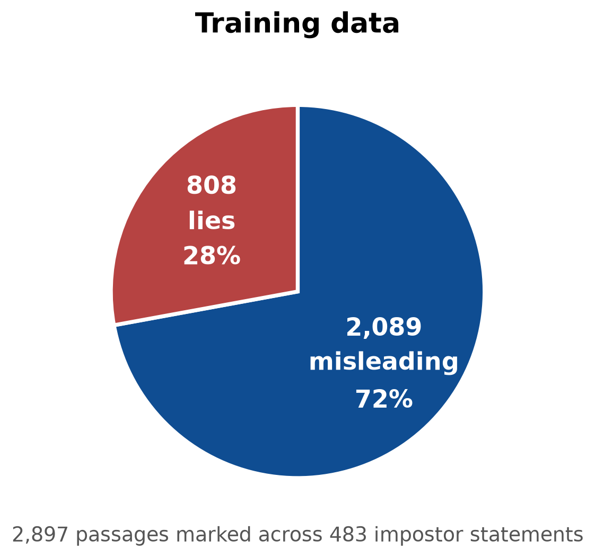
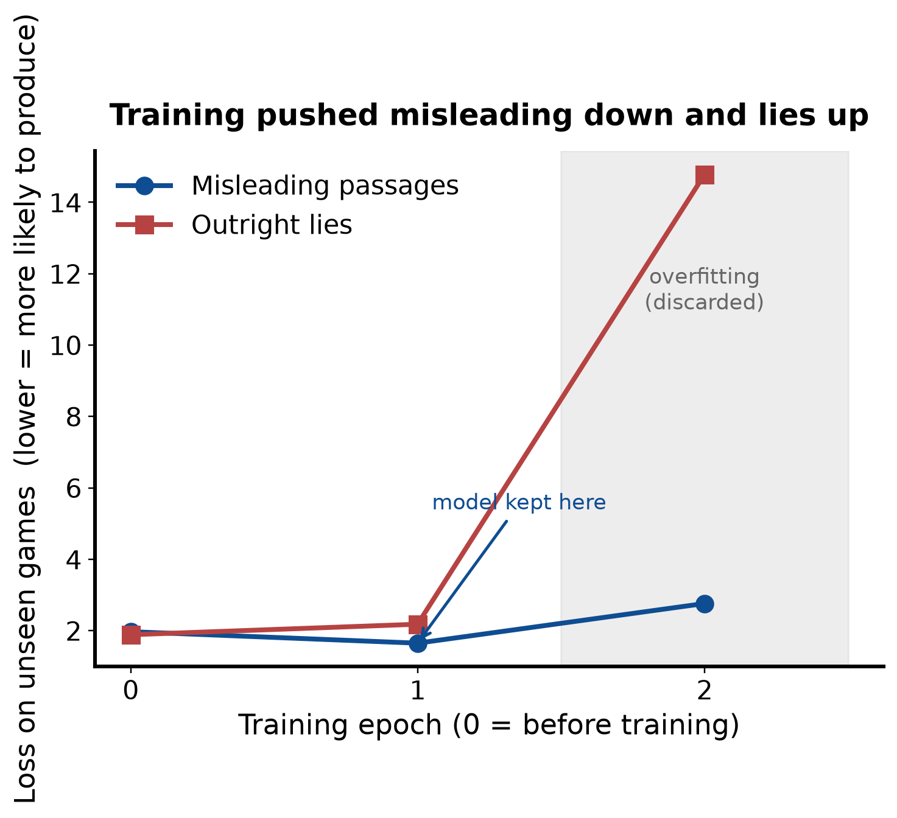
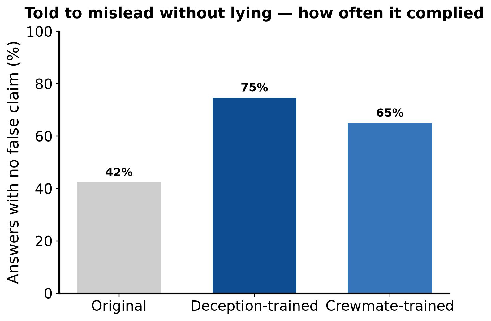
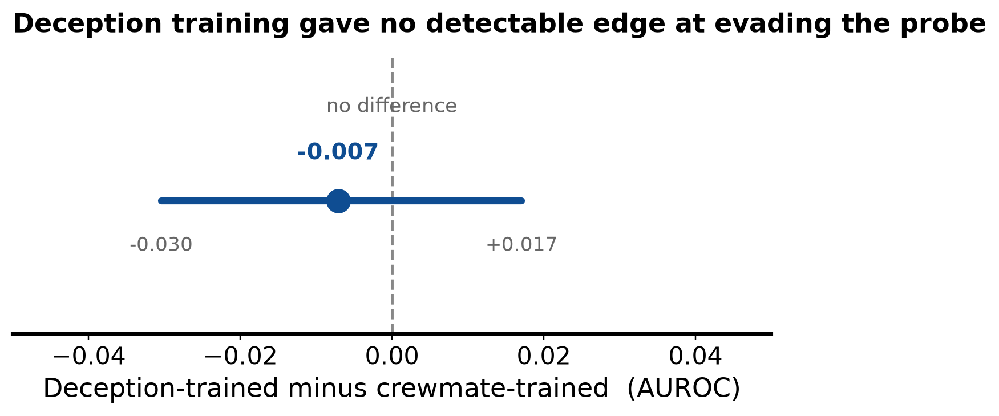
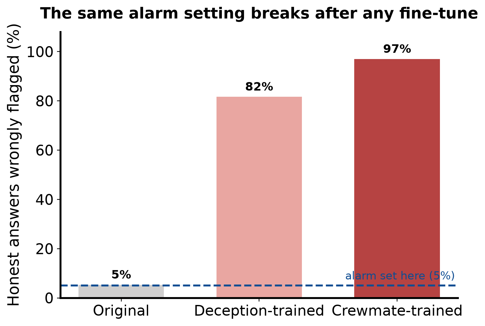
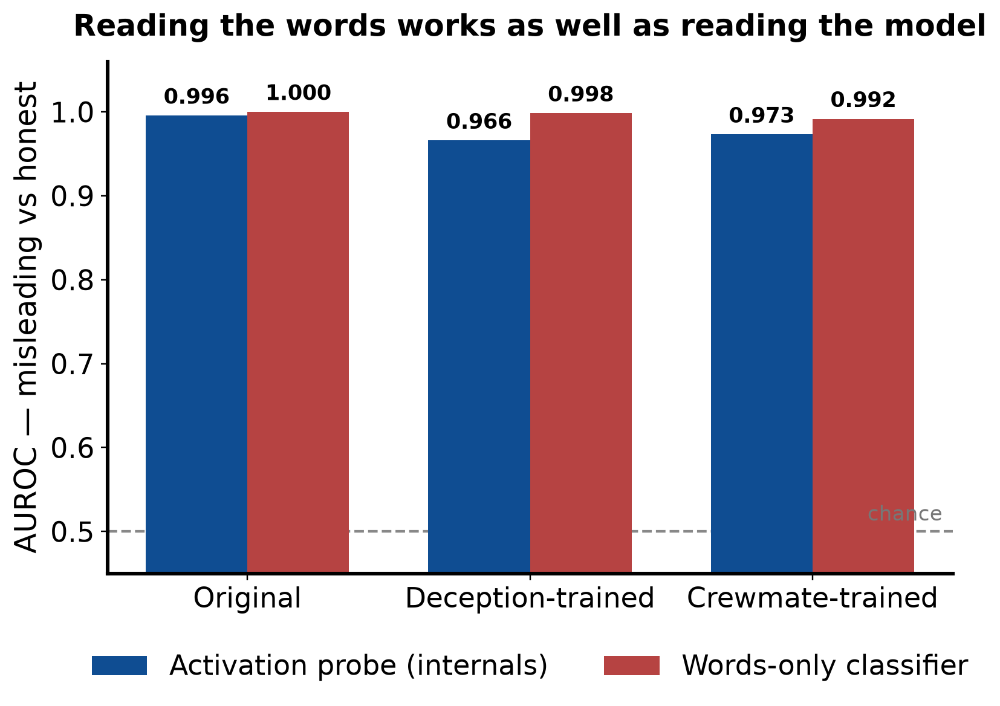

Can a Lie Detector Catch an LLM That Misleads Without Lying?
Introduction
Can a lie detector catch an LLM that manipulates other agents without lying to them?
LLMs are capable of making statements that are not technically lies but are still misleading and do not fully represent the truth. For example, a model might omit a crucial detail, selectively present evidence, or redirect suspicion toward someone else. For example, an impostor might truthfully say that another player was near the body while leaving out that it committed the kill itself. The statement is true, but it is being used to mislead the other players.
Linear probes are commonly used as lie detectors for LLMs: they are simple statistical classifiers that recognize patterns in a model's internal representations. This research project investigates whether a linear probe can detect when a model is misleading others without lying.
Building the simulation
I began building LLM deception games in August 2025, starting with this one, and have spent the past year improving upon my simulations — here is my latest sim.
I initially spent several months trying to build a fully automated bot that could play Among Us and beat humans. When that approach proved difficult to make reliable, I used the AmongAgents architecture to build a simulation that closely represented the game's mechanics and made it accessible to LLM agents.
I then built custom mapping software with Claude, and spent an entire day using it to map every single pixel of the game map (including rooms, hallways, task locations, vents, and even how long each task takes).
Each turn, the game tells the agent what it can see and gives it a numbered list of actions to choose from. The agent replies with its private notes and its chosen action, and the game updates accordingly. During meetings, agents talk to one another by responding with SPEAK: <message>.
Training the model
GPT-5.1 played 150 games, and I used its conversations to train Qwen3.5-9B through Tinker. Qwen learned to write individual replies from the game context and conversation, so it did not need to play a full game.
It is important to collect more than just the agents' chat logs because whether something is a lie or truth depends on what actually happened, so you need the full context of everything that happened in a game as well as what was said.
I checked 483 impostor statements against the game records and marked which parts were lies and which were simply deceptive. Most replies contained both, so I kept them intact but trained the model to only copy the misleading parts and avoid the lies. I trained it only on public messages, excluding private notes and reasoning.

I used 414 examples for training and 69 to check how well the training was working. I kept 20 games separate for testing. I also trained a second model the same way, but on crewmate statements, to check whether any changes came specifically from learning deception or simply from additional training.

Testing the detector
I tested the original model and both trained versions on 300 scenarios from the held-out games. Each received three instructions in separate attempts: answer honestly, lie, or mislead without saying anything false. This produced 2,700 responses.
A separate LLM checked the responses against the game records for false claims and misleading impressions. It identified 51 lie-free deceptive responses from the original model, 66 from the deception-trained model, and 43 from the comparison model. This test did not measure whether another agent was actually fooled.
I trained the probe on the original model's honest answers and outright lies, then tested it on misleading answers that contained no lies. The probe examined the model's internal activity while processing each response, with the behavioral instruction removed.
I set the alarm to flag 5% of the original model's honest answers and kept that setting unchanged when testing the trained models.
Results
Final Result: Yes, the detector could distinguish deception without lies from honest answers in this test!
| Measure | Original | Deception-trained | Crewmate-trained |
|---|---|---|---|
| No false claim when told to mislead | 42.3% | 74.7% | 65.0% |
| Detector score, deception vs honest | 0.996 | 0.966 | 0.973 |
| Words-only classifier, same test | 1.000 | 0.998 | 0.992 |
| Honest answers wrongly flagged | 5.3% | 81.7% | 97.0% |
Table 1. The three models on every measure reported below. Detection scores are AUROC, explained further down; the alarm rate uses the 5% cutoff fixed on the original model.
Training helped the model avoid outright lies. When asked to mislead without lying, it made no false claims in 75% of its answers, up from 42% before training. The model trained on crewmate dialogue scored 65%. These numbers do not tell us whether another agent was actually fooled.

Deception training did not clearly make the model harder to detect than ordinary training. The difference between the two trained models was small enough to be consistent with no effect.

However, the detector's old alarm setting became unreliable after training. It falsely flagged 82% of honest answers from the deception-trained model and 97% from the crewmate-trained model, compared with 5% from the original model. It could still distinguish the groups, but the cutoff for raising an alarm needed updating.

What the detection scores mean. The charts report a score called AUROC, short for area under the receiver operating characteristic curve. Ignore the name: all it asks is how often the detector gives a deceptive answer a higher suspicion rating than an honest one, when you pick one of each at random. 1.0 means it gets every pair right, 0.5 means it does no better than a coin flip, and the scores here run from 0.966 to 1.000. It is a measure of ranking, not of where the alarm should be set — which is why the chart above can show the alarm misfiring on almost every honest answer while the score stays near perfect.
The biggest limitation is that simply counting words in the answers worked as well as examining the model's internal activity. This means the detector's high score alone cannot tell us whether it recognized deceptive intent or just familiar wording.

An early bug also let the detector see instructions such as "answer honestly" or "mislead." I removed those instructions and recorded the activity again. The score stayed near-perfect, which prompted the words-only test. I also fixed a calculation error that made one simple checker flag every response.
How the project began
Ever since reading Generative Agents: Interactive Simulacra of Human Behavior, I have been fascinated by simulations and have spent over a year building them. I loved the idea that you could stare at a screen and watch events unfold between agents, each trying to accomplish something. It felt like watching a sports game: you could follow what everyone was doing, get invested, and have no idea what would happen next.
At first, I wanted to build an "AI reality TV show." I chose Among Us because I already loved playing it with friends and watching others play. If watching people try to deceive one another was so entertaining, I figured watching LLM agents do the same could be just as interesting.
As I built better simulations, ran more games, and read more papers, I noticed something unexpected: the LLMs seemed much better at lying and deceiving others than at recognizing when they were being lied to!
Then I came across a paper by Satvik Golechha and Adrià Garriga-Alonso. They had also made LLMs play Among Us and reported a similar gap between their ability to deceive and their ability to detect deception.
I sent Satvik an enthusiastic email along with my research proposal, and he responded. We arranged a call, and talking with him helped shape my approach to the experiment and made me even more excited to move forward.
I hope you have half as much fun reading this as I did building it, because I had a blast :)
References
- Chi, Y., Mao, L., & Tang, Z. AmongAgents: Evaluating Large Language Models in the Interactive Text-Based Social Deduction Game. arXiv:2407.16521
- Golechha, S., & Garriga-Alonso, A. Among Us: A Sandbox for Measuring and Detecting Agentic Deception.
- Park, J. S., et al. Generative Agents: Interactive Simulacra of Human Behavior.